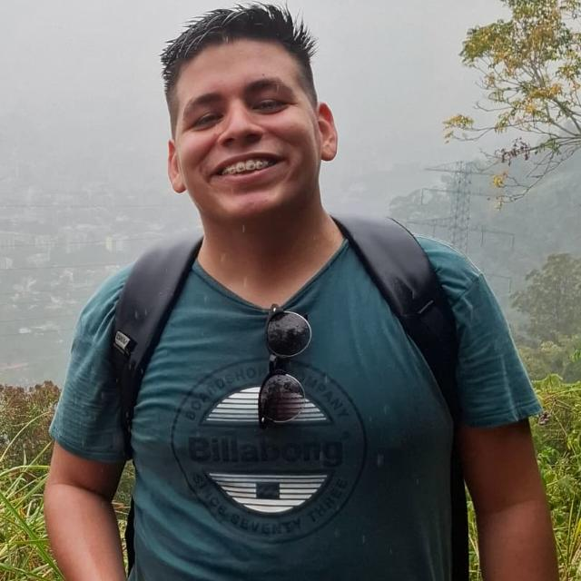

Welcome to my website WDD 130
Hello, I am Manuel Colmenares. I am from Miranda, Venezuela, and I am a returned missionary; I served in the Venezuela Valencia Mission. I returned three years ago, and since then, I have been studying computer science at the National Experimental University of Caracas. I also studied English at the Venezuelan-American Center. In the Church, I currently serve as the second counselor in the elders quorum.
